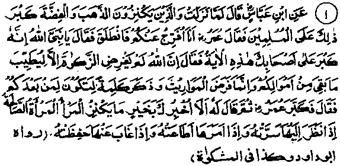
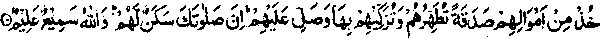
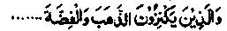
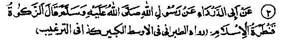
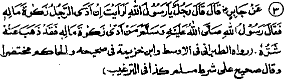
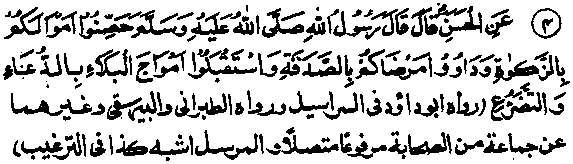
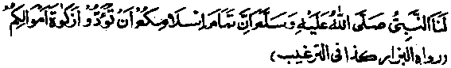

Chapter Four · Section (b): Ahadith on the virtues of Zakaat
Section (b)
Ahadith on the Virtues of Zakaat
1. Some relevant Ahadith

Hadith 1
Ibne Abbas Radhiallaho anho says: "When the Ayat meaning: and those who hoard gold and silver..... was revealed, the Sahabah Radhiallaho anhum felt greatly concerned; so Umar Radhiallaho anho said that he would solve their difficulty. He, therefore, went and told Rasulullah Sallallaho alaihe wasallam that the Sahabah were upset by the Ayat. Rasulullah Sallallaho alaihe wasallam said, "Allah Ta'ala has made Zakaat obligatory in order to purify the property that remains with you after payment of Zakaat; and the procedure for inheritance exists in order that property should remain with those who inherit it after you. ’Upon this, Umar Radhiallaho anho said, "Allaho-Akbar (Allah is great)" with joy. Rasulullah Sallallaho alaihe wasallam then added, "Shall I not inform you about the best thing a man can keep as a treasure?" It is a woman of virtue who pleases her husband when he looks at her, obeys him when he asks her to do a thing and guards, his things (also her virtue) when he goes away from her."
Note: The Ayat mentioned in the Hadith has been quoted at Sr. No. 5 in Chapter Two above. It seems to mean that all manner of hoarding, however indispensable, shall be severely punished in the Hereafter; so the Sahabah Radhiallaho anhum were seriously upset because, sometimes, hoarding of money become indispensable; they feared lest they should find it difficult to fulfil this commandment, whereas obedience to Allah Ta‘ala and to His Rasul Sallallaho alaihe wasallam was a matter of life and death for them. So, Umar Radhiallaho anho approached Rasulullah Sallallaho alaihe wasallam to dispel their anxiety by explaining the Ayat Rasulullah thereupon assured them that Zakaat has been made obligatory in order to purify the property that remains with a person after paying what is due on it This proves the admissibility of withholding money, because Zakaat falls due on the property that remains with a person for one complete year. If hoarding were disallowed in all circumstances, there would be no need to enjoin Zakaat. The Hadith thus indicates the virtues of Zakaat Apart from the reward one gets for performing it, Zakaat also purifies the remaining property. In the Holy Qur’an, there is a clear reference to the purifying effect of Zakaat in the following Ayat

‘Take Sadaqah of their wealth, wherewith you may purify them (of the effect of sins’)’ (at-Taubah: 103)
A Hadith reports Rasulullah Sallallaho alaihe wasallam as saying, "Pay Zakaat out of your wealth; it is a means of purification for you’. (Kanz). According to another Hadith, Rasulullah Sallallaho alaihe wasallam said, ‘Pay Zakaat; it is a great purifier and, through paying it Allah Ta'ala will purify you (of sins)’. Still another Hadith has: Protect your wealth from the uncleanliness of sins, or from going waste, by paying Zakaat and treat your sick with giving away money as Sadaqah, and make supplications (Dua'a) to guard yourself against calamities. (Kanz) Another Hadith puts it as follows:
‘Protect your property by means of Zakaat treat your sick with spending in Sadaqah and seek help from Allah against calamities by beseeching Him through humility. (Kanz).
Then, in the main Hadith quoted above, Rasulullah Sallallaho alaihe wasallam gives another proof of the admissibility of withholding money through the requirements of inheritance. If withholding money were not permissible, there would be nothing to inherit Rasulullah Sallallaho alaihe wasallam then warned the Sahabah that though hoarding of money is admissible as the last resort, it is not a thing to be kept stored in coffers; it is better to spend it The best thing for safe custody is a virtuous wife. Some versions of the Hadith say that the Sahabah asked as to what was the best thing to be treasured and Rasulullah Sallallaho alaihe wasallam replied that it was a virtuous woman. Thauban Radhi-allaho anho relates that they were on a journey with Rasulullah Sallallaho alaihe wasallam when the Ayat was revealed:

‘And those who hoard gold and silver...........
Some of the Sahabah Radhiallaho anhum said, O Rasulullah, we wish we knew what are the best things to be treasured and taken care of. Rasulullah Sallallaho alaihe wasallam replied, "A tongue that remains occupied with the remembrance (Zikr) of Allah Ta'ala, a heart filled with gratitude (to Allah Ta'ala) and a virtuous wife who aids her husband in the performance of religious practices. (Durre Manthur). It has been related in another Hadith that when the Ayat (mentioned above) was revealed, Rasulullah Sallallaho alaihe wasallam said, repeating his words thrice, 'Woe to gold and silver, ' ‘How cursed are they’! The Sahabah Radhiallaho anhum asked, "What is the best thing to be protected and prized as treasure?” Rasulullah Sallallaho alaihe wasallam replied, ”A tongue that remains occupied with the remembrance (Zikr) of Allah, a heart filled with fear of Allah and a virtuous wife who helps her husband in the observance of religious obligations and devotions." (Tafseer-e-Kabir)
How fine are the sayings of Rasulullah and how aptly stated! In a few words, he has indicated the admissibility of withholding money, together with the commendability of keeping nothing back with oneself, and also defined a mode of living which ensures peace in this life and success in the Akhirah. This life-pattern consists in keeping one’s tongue occupied with Zikr, having a heart filled with gratitude to Allah and living with a devout, virtuous, sensible and submissive wife who guards her own virtue as well as the possessions of her husband, thus making his life full of comforts and all manner of joys, without exposing him to trials and temptations which wealth brings.

Hadith 2
Rasulullah Sallallaho alaihe wasallam has said, "Zakaat is a (great and strong) bridge of Islam".
Note: Just as a strong bridge is a convenient- means of going across to a place, so paying Zakaat is a short and easy way to attain to the reality of Islam or the easiest and surest means of attaining nearness to Allah Ta'ala. Abdul Aziz Ibne Umair Rahmatullah alaihe who was a grandson of Khalifah Umar Ibne Abdul Aziz Rahmatullah alaihe has said, "Salaat will take you half way to the presence of Allah Ta'ala, fasting will take you to the entrance of His court and Sadaqah will enable you to gain audience with Him". (Ithaaf). There is a subtle affinity between Zakaat and a bridge, which becomes evident from the following remark by the great Sufi Sheikh Shaqiq Balkhi Rahmatullah alaihe-
"We have searched for five things and discovered them in five places; abundance of livelihood through forenoon Nafl (Salaat-udh-Dhuhaa) and illumination of the grave through Tahajjud Salaat; satisfactory answers to Munkar and Nakeer (the two angels who visit the grave for Reckoning) through recitation of the Holy Qur’an; easy crossing of the ‘Siraat’ (the bridge over Jahannam) through fasting and Sadaqah; and a place in the shade of the Arsh (Throne) of Allah on the Day of Resurrection through meditation in solitude”. (Fazail-e-Salaat)

Hadith 3
Rasulullah Sallallaho alaihe wasallam said, If a man pays the Zakaat due on his property, it causes its evil influence to vanish".
Note: Some traditions have it thus: "When you have paid the Zakaat due on your wealth, you have caused the evil influences attached to it to disappear". (Kanz). That is to say, wealth can cause many evils to happen but, if one pays Zakaat regularly, he remains safe from its evil influence. Obviously, one shall be saved from punishment, in the Akhirah, for possessing a property, if he has paid the Zakaat due on it In this world also, Zakaat ensures protection of his property. This fret forms the content of the Hadith that follows immediately. And, if Zakaat is not paid, the property gets destroyed, according to the Hadith quoted at serial no. 6 in Chapter six below.

Hadith 4
Rasulullah Sallallaho alaihe wasallam said, "Protect your possessions by payment of Zakaat, treat your patients by giving Sadaqah and face the waves of afflictions with supplications and crying unto Allah in humility."
Note: The Arabic word ‘Hassinoo’is derived from ‘Tahseen’ which means building ‘fortifications all around; The Hadith means that, as a man living in a fort is safe against attacks from all sides, similarly, the property becomes safe after Zakaat has been paid on it, like a treasure kept in a fortress. A Hadith says, "Once Rasulullah Sallallaho alaihe wasallam was sitting at al-Hateem in the Holy Masjid of Ka'bah when a man mentioned some people who had suffered a great loss because the sea-waves had washed away their property. Rasulullah Sallallaho alaihe wasallam said, ‘Whenever any property is destroyed in a Jungle or on the sea, it is because of the non-payment of Zakaat; so protect your property by: payment of Zakaat, treat your patients with Sadaqah and check the calamities by making Dua'a unto Allah, because Dua'a removes a calamity that has befallen and checks it, if it is about to descend. When Allah Ta“ala wills the survival of a people or wills that they thrive, He grants them chastity and adorns them with the manly qualities of liberality and large-heartedness. And when He wills the annihilation of a community, they indulge in breach of trust". (Kanz)

Hadith 5
Alqamah Radhiallaho anho says that when our group of people visited Rasulullah Sallallaho alaihe wasallam he said to them, "Verily you can make your Islam perfect by your payment of the Zakaat due on your property.'
Note: Obviously, a complete adherence to Islam is not possible without payment of Zakaat, which is one of the five essential obligations enjoined by Islam; the other four being: belief in ‘La-ilaha-illallaho, Muhammad-ur-Rasulullah’, Salaat, Fasting and Hajj. And if a person omits any one of these five fundamentals, he cannot be a perfect Muslim. Abu Ayyub Radhiallaho anho reported that a person came to Rasulullah Sallallaho alaihe wasallam and said, "Tell me what I should do to enter Jannah". Rasulullah Sallallaho alaihe wasallam replied, "Worship Allah and associate no partners with Him, observe Salaat, pay Zakaat regularly and strengthen bonds of kinship." Another Hadith says, "An Arabian nomad came and said to Rasulullah, "Tell me what I should do to enter Jannah." Rasulullah Sallallaho alaihe wasallam said, Worship Allah and associate no partners with Him, observe the Fardh Salaat regularly, pay Zakaat and fast during Ramadhan." The man said, ‘By Him in whose hand my soul is, I shall not add anything to this, nor fall short of it’. Then when he turned away, Rasulullah Sallallaho alaihe wasallam said, Tf anyone wishes to look at a man of Jannah, let him look at this man". (Targheeb)